승강기기사 (2009-08-30 기출문제)
1과목: 승강기 개론
1. 직접식 유압 엘리베이터의 실린더 길이는 얼마로 하는가?
- 승강로 행정거리의 1.5배이다.
- 승강로 행정거리와 동일하다.
- 승강로 행정거리의
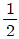
이다. - 승강로 행정거리의
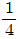
이다.
(정답률: 70%)

2. 공동주택용 엘리베이터에서는 주행중 문을 손으로 억지로 여는데 필요한 힘은 최소 몇 [kgf]이상이 필요한가?
- 5
- 10
- 20
- 30
(정답률: 57%)
3. 로프 1가닥의 정격파단강도가 5000[kgf]인 로프를 6가닥 사용하고 2:1로핑이 적용된 승강기에서 정격속도 240[m/min]이고 안전율은 12로 하였을 경우에 승강기의 카로프에 걸리는 최대정지부하는 몇 [kg]인가?
- 2500
- 5000
- 7000
- 10000
(정답률: 44%)
4. 상부체대 (top beam)의 최대 처짐량은 부과된 정지 부하를 기준으로 그 값이 얼마 이하이어야 하는가?
- 전장(span)의
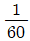
이하 - 전장(span)의
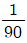
이하 - 전장(span)의
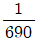
이하 - 전장(span)의
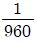
이하
(정답률: 80%)
5. 소형에리베이터에 대한 사항이 아닌 것은?
- 단독주택에 주로 설치한다.
- 승객용으로 보통 6인승 이하이다.
- 적재하중이 200[kg]이하인 것을 말한다.
- 승강행정이 10[m]이하인 것이다.
(정답률: 54%)
6. 경사형 휠체어리프트는 레일의 경사가 수평으로부터 최대 몇 도[°]까지 제한하여 설치되는가?
- 15° 이하
- 30° 이하
- 55° 이하
- 75° 이하
(정답률: 67%)
7. 주로프에서 안절율이 10 이상이고 여러가닥의 로프를 사용하는 경우 최소 몇 [mm이상의 로프를 사용할 수 있는가?
- 6
- 8
- 10
- 12
(정답률: 64%)
8. 에스컬레이터 안절율이 10이상이고 여러가닥의 로프를 사용하는 경우 최소 몇 [mm]이상의 로프를 사용할 수 있는가?(오류 신고가 접수된 문제입니다. 반드시 정답과 해설을 확인하시기 바랍니다.)
- 6
- 8
- 10
- 12
(정답률: 32%)
9. 가이드레일을 설치하는 목적이 아닌 것은?
- 카와 균형추의 승강로 평면내의 위치를 규제
- 카의 자중이나 화물에 의한 카의 기울어짐을 방지
- 비상정지장치 작동시 수직하중을 유지
- 도르래의 회전을 카의 운동으로 전환
(정답률: 78%)
10. 그림에 나타난 회로에 대한 설명 중 맞는 것은?
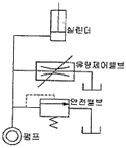
- 브리드 오프(Bleed-off)회로로서 정확한 제어가 곤란하지만 효율이 높다.
- 브리드 오프(Bleed-off)회로로서 정확한 제어가 가능하지만 효율이 낮다.
- 미터인(Meter-in)회로로서 정확한 제어가 곤란하지만 효율이 높다.
- 미터인(Meter-in)회로로서 정확한 제어가 가능하지만 효율이 낮다.
(정답률: 45%)
11. 로프와 시브(Sheave)의 미끄러짐을 설명한 것 중 옳은 것은?
- 로프가 감기는 각도는 클수록 미끄러 지기 쉽다.
- 카의 감속도와 가속도는 작을수록 미끄러지기 쉽다.
- 로프와 시브의 마찰계수는 클수록 미끄러지기 쉽다.
- 카측과 균형추측의 로프에 걸리는 중량비가 클수록 미끄러지기 쉽다.
(정답률: 80%)
12. 비상정지장치에 대한 설명으로 옳은 것은?
- 카의 하강속도가 급격히 증가 할 때 하강을 정지 시키는 장치로서 기계실에 설치되어 있다.
- 카의 하강속도가 급격히 증가할 때 하강을 정지시키는 장치로서 피트내에 설치되어 있다.
- 카의 속도가 이상 과속시 제어하는 장치로서 제어반에 설치되어있다.
- 카의 하강속도가 급격히 증가할 때 하강을 정지시키는 장치로서 카에 설치되어 있다.
(정답률: 67%)
13. 워드레오나드 방식의 승강기에서 상승 및 하강시방향 전환 방법은?
- 발전기의 계자전류 방향을 바꾼다.
- 발전기 회전방향을 바꾼다.
- 발전기 계자전류와 회전방향을 바꾼다.
- 발전전압 극성은 그대로 하고 전기자 전압을 바꾼다.
(정답률: 62%)
14. 다음 중 엘리베이터의 부속장치라고 볼 수 없는 것은?
- 인터폰
- 비상등
- 파킹스위치
- 문지름판
(정답률: 73%)
15. 엘리베이터의 안전회로, 신회회로, 조명회로의 사용 전압이 220[V]의 경우 절연저항은 얼마 이상 이어야 하는가?
- 0.1[MΩ]이상
- 0.2[MΩ]이상
- 0.3[MΩ]이상
- 0.4[MΩ]이상
(정답률: 62%)
16. 화물용 엘리베이터의 경우 카 실과 승강로 벽과의 수평거리를 125[m]이하로 유지하지 않아도 되는 경우는?
- 전망용 엘리베이터의 경우
- 자동차용 엘리베이터의 경우
- 정전시 구출운전장치가 설치된 경우
- 카 도어록이 설치된 경우
(정답률: 47%)
17. 엘리베이터가 2~3대 병설될 때에 사용되는 조작방식으로 한 개의 승강장에서의 부름에 1대만의 케이지가 응답하여 쓸데없는 정지를 줄이며 분산하여 대기하는 방식은?
- 군승합 자동식
- 군관리 방식
- 단식 자동식
- 반 자동식
(정답률: 81%)
18. 비상용 엘리베이터에 있어서 2차 소방운전기능 구현과 거리가 먼 것은?
- 1차 소방스위치가 작동된 상태에서만 2차 소방운전 기능이 유효하도록 하여야 한다.
- 카 및 승강장 문이 열린 상태에서 가고자 하는 행선층 버튼을 약 3초간 계속 누르면 카가 문이 열린 상태에서도 출발하도록 구성하여야 한다.
- 문이 열린 상태에서 출발 시 경음은 행선층 버튼을 누르는 순간부터 울리기 시작하여 카가 출발하면 경보음이 멈추도록 구성하여야 한다.
- 경보음이 멈춘 후에 행선층 버튼이나 2차 소방 스위치에서 손을 떼면 카는 정지하도록 구성하여야 한다.
(정답률: 46%)
19. 카의 정격속도가 45[m/min]인 엘리베이터에서 조속기의 고속스위치가 작동해야 하는 속도는 몇[m/min]를 초과하지 않아야 하는가?
- 60
- 63
- 65
- 68
(정답률: 59%)
20. 엘리베이터 카 상부에 준비하는 비상구출구(Emergency Exit)에 대한 설명 중 잘못된 것은?
- 비상 구출구 열림 면적은 0.2[m2]이상이어야 한다.
- 가로, 세로 각 변의 길이가 최소 400[mm]이상이어야 한다.
- 출구 커버는 밖으로 열려야 하고 경첩 또는 기타 수단으로 항구적으로 부착되어 있어야 한다.
- 출구 커버는 카 상부나 카 내부 어느 곳에서도 열수 있어야 한다.
(정답률: 62%)
2과목: 승강기 설계
21. 와이어 로프를 소선 강도에 따라서 파단하중이 작은 것부터 나열하고자 할 때 순서가 바르게 된 것은?
- A종-B종-E종-G종
- G종-E종-A종-B종
- B종-A종-G종-E종
- E종-G종-A종-B종
(정답률: 58%)
22. 권상기 및 기타 기게대에 고정부착된 장치의 모든 하중이 1200[kg], 주로프의 중량이 100[kg], 주로프에 작용하는 하중이 5000[kg]일 때 기계대 안전율을 계산할시 적용하중은 얼마로 하는가?
- 10400[kg]
- 10800[kg]
- 11200[kg]
- 11400[kg]
(정답률: 38%)
23. 엘리베이터의 종점스위치인 리미트스위치와 파이널리미트스위치에 대한 설명 중 잘못된 것은?
- 리미트스위치와 파이널리미트스위치는 기계적조작식, 광학적조작식, 자기적조작식 등을 사용할 수 있다.
- 리미트스위치는 정상적인 착상장치나 운전에 관계없이 기능을 수행하여야 한다.
- 파이널리미트스위치가 작동하면 정상적인 운전장치에 의한 카의 움직임은 어느 방향으로든지 움직일 수 없어야 한다.
- 파이널리미트스위치는 승가로 내부에 설치하고 카에 부착된 캠으로 조작되어야 한다.
(정답률: 55%)
24. 승강기의 비상정지장치(Satety Device)중 점차 작동형은 몇 [m/min]이상에 적용하는 것이 가장 적잘한가?
- 15
- 45
- 60
- 90
(정답률: 64%)
25. 녹이 발생되기 어렵도록 하기 위하여 표면에 아연도금을 하여 다습 환경에 사용하는 와이어로프의 종류는?
- E종
- A종
- B종
- G종
(정답률: 79%)
26. 비상정지장치의 성능 시험과 관계가 없는 것은?
- 적용 중량
- 가이드 레일의 규격
- 적용 작동속도
- 정지거리
(정답률: 83%)
27. 층고 4[m], 속도 30[m/min], 1200형 (스텝폭 : 1000mm)에스컬레이터, 총효율 60[%], 승객 승입률 85[%], 경사각 30도인 에스컬레이터에 이용될 전동기 용량은 약 몇 [kW]인가?
- 5.5
- 6.5
- 7.5
- 9.5
(정답률: 35%)
28. 직류 전동기의 전기자 반작용에 의한 현상이 아닌 것은?
- 주자속이 증가한다.
- 발전기에서는 기전력이 저하한다.
- 전기자 중성점이 이동한다.
- 보상권선은 전기자 반작용을 방지한다.
(정답률: 50%)
29. 엘리베이터 배전선의 통전전류를 나타낸 식은? (단, It[A]:통전전류, I[A]:엘리베이터 1대당 정격전류, N:엘리베이터 대수, Y:부등률, IG[A]:제어전류이다.)
- It=IN+IGN
- It=INY+IGN
- It=IY+IGN
- It=INY
(정답률: 51%)
30. 전동기의 절연등급을 낮은 것부터 높은 것의 순으로 나타낸 것은?
- A종-B종-E종-F종-H종
- A종-E종-B종-F종-H종
- H종-F종-E-종B종-A종
- F종-E종-H종-B종-A종
(정답률: 62%)
31. 공동주택의 승객용 유압식엘리베이터 설계시 고려하여야 할 사항으로 옳지 않은 것은?
- 카위 운전의 경우 꼭대기 부분의 안전거리는 1.2[m]이상을 확보아도록 한다.
- 직접식의 꼭대기틈새는 플랜저여유 스트록 더하기 60[cm]이상이 되도록 한다.
- 간접식은 꼭대기틈새가
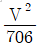
[cm]이상이 되도록 한다. - 카가 최하층에 정지하고 있을 때 카와 완충기의 거리는 최대 600[mm]로 한다.
(정답률: 58%)
32. 동력전원설비 용량을 산출하는데 필요한 요소가 아닌 것은?
- 전압강하
- 전압강하계수
- 주위온도
- 감속전류
(정답률: 54%)
33. 정격속도 1⑤[m/min]인 승강기의 조속기 작동 속도는?
- 제1단 과속 스위치 작동속도 = 63(m/min), 제2단 트립속도 = 68(m/min)
- 제1단 과속 스위치 작동속도 = 78(m/min), 제2단 트립속도 = 84(m/min)
- 제1단 과속 스위치 작동속도 = 107(m/min), 제2단 트립속도 = 119(m/min)
- 제1단 과속 스위치 작동속도 = 122(m/min), 제2단 트립속도 = 136(m/min)
(정답률: 56%)
34. 전동기의 용량을 계산하는 계산식은? (단, L : 적재하중, V : 속도, B : 밸러스률, η : 효율이다.)
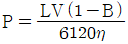
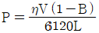
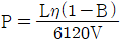
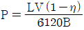
(정답률: 74%)
35. 1:1 ROPING의 하부체대에 [200×80×7.5(SS-400강재)]부재를 2본 사용한다면 응력(σ) 및 안전율(S)은 약 얼마인가? (단, 스팬(SPAN) 길이 1900[mm], 카 자중1450[kg], 정격적재하중 1150[kg], 단면계수 195[cm3]이며 허용응력 σf=4100[kg/cm2])
- σ=132.4[kg/cm2], S=16.8
- σ=147.1[kg/cm2], S=21.5
- σ=158.3[kg/cm2], S=25.9
- σ=169.3[kg/cm2], S=29.4
(정답률: 31%)
36. 파이널 리미트 스위치에 대한 설명으로 틀린 것은?
- 기계적으로 작동되어야 하며 작동 캠은 금속으로 만들어야 한다.
- 스위치의 접촉은 기계적으로 열려야 한다.
- 카 또는 균형추가 완전히 압축된 완충기 위에 얹히기까지 작동을 계속하여야 한다.
- 스위치가 작동하면 정상적 운전장치에 의해 하강 방향으로는 움직일 수 없으나 상승방향으로는 움직일 수 있어야 한다.
(정답률: 70%)
37. 기어의 장점에 대한 설명을 가장 옳은 것은?
- 동력전달이 불확실하다.
- 충격을 흡수하는 성질이 있다.
- 호환성이 낮다.
- 높은 정밀도를 얻을 수 있다.
(정답률: 78%)
38. 에스컬레이터를 배치할 경우 고려할 사항 중 틀린 것은?
- 바닥 점유 면적은 되도록 크게 배치한다.
- 건물의 정면 출입구와 엘리베이터 설치 위치와의 중간이 좋다.
- 백화점일 경우에는 가장 눈에 띄기 쉬운 위치가 좋다.
- 사람의 움직임이 많은 곳에 설치되어야 한다.
(정답률: 77%)
39. 비상용 엘리베이터 배선에 관한 것으로 알맞은 것은?
- 승강로내의 전기배서니은 일반배선 으로 한다.
- 중앙관리실에 이르는 전선은 승강로에서 분기시키는 것이 불가능하다.
- 방적구조의 기기에 이르는 전선은 승강로에서 분기시키는 것이 불가능 하다.
- 방적구조의 기기에 이르는 전선의 접속점은 방적처리가 필요하지 않다.
(정답률: 48%)
40. 감시반의 주된 기능으로 볼 수 없는 것은?
- 1차 소방운전 기능
- 분석기능
- 경보기능
- 제어기능
(정답률: 71%)
3과목: 일반기계공학
41. 보를 지지하는 지점의 조이류 중 지점이 핀으로 지지되어 있어 보의 호전은 자유로우나 수평, 수직 이동이 불가능하여 수직반력, 수평반력 등 2개의 반력이 발생하는 것은?
- 부동회전지점
- 가동회전지점
- 고정지점
- 정정지점
(정답률: 60%)
42. 가공물을 회전시키면서 복잡한 형상이나 속이 빈 대형 공작물의 내면을 축대칭 형상으로 가공하는데 가장 적합한 공작기계는?
- 탁상선반
- 보링머신
- 밀링머신
- 세이퍼
(정답률: 72%)
43. 용접부 결함 중 언더컷(under cut)의 원인으로 틀린 것은?
- 용접전류가 낮을 때
- 아크 길이가 너무 길 때
- 용접봉 선택 불량
- 용접속도가 적당하지 않을 때
(정답률: 58%)
44. 아래 그림에서 마이크로미터 딤블의 눈금선과 눈금선의 간격이 0.01[mm]일 때 “X”부분이 일치하였다면 측정값은 몇 [mm]인가?
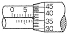
- 7.37
- 7.87
- 17.37
- 17.87
(정답률: 77%)
45. 보통주철에 관한 설명으로 틀린 것은?
- 보통 탄소함유량은 3.23.8[%] 정도이다.
- 보통 인장강도는 98~196[MPa] 정도이다.
- 기계의 베드 및 구조물의 몸체에 사용된다.
- 단조가 가능하여 열간 가공을 할 수 있다.
(정답률: 59%)
46. 기계서계와 관련된 안전율에 대한 설명으로 틀린 것은?
- 항상 1보다 커야한다.
- 안전율이 너무 작으면 구조물의 재료가 낭비된다.
- 기준강도(극한응력 등)를 허용응력으로 나눈 값이다.
- 안전율을 경정할 때는 공학적으로 합리적인 판단을 요한다.
(정답률: 85%)
47. 유압 및 공기압 용어 중 감압밸브, 체크 밸브, 릴리프밸브 등에서 백브 시트를 두드려 비교적 높은 음을 내는 일종의 자려 진동현상을 의미하는 용어는?
- 릴리핑
- 언더랩
- 채터링
- 크래킹
(정답률: 65%)
48. 탐소강은 탄소 함유량에 따라 그 성질이 변하는데 탄소량이 증가함에 따라 변화되는 일반적인 성질로 올바른 것은?
- 경도는 감소하고, 연신율은 증가한다.
- 경도는 증가하고, 연신율은 감소한다.
- 잔면 수축률은 증가하고, 경도는 감소한다.
- 충격치는 증가하고, 연신율, 단면 수축률은 감소한다.
(정답률: 75%)
49. 모듈이 10이고, 잇수가 48인 표준 평기어의 바깥지름은 몇 [mm]인가?
- 460
- 480
- 490
- 500
(정답률: 47%)
50. 풀리의 지름이 각각 D2=900[mm]이고, 중심거리가 C=1000[mm]일 때, 평행겅기의 경우 평 벨트의 길이는 약 몇 [mm]인가?(문제 오류로 D1 지름값이 없습니다. 정확한 내용을 아시는분 께서는 오류신고를 통하여 내용 작성 부탁 드립니다. 정답은 4번입니다.)
- 1717[mm]
- 2400[mm]
- 3245[mm]
- 3975[mm]
(정답률: 43%)
51. 나사 머리의 모양이 접시모양일 때 볼트의 머리 부분이 가공물 안으로 묻히도록 테이퍼 원통형으로 절삭하는 가공은?
- 리밍
- 스폿페이싱
- 태핑
- 카운터 싱킹
(정답률: 66%)
52. 산화 할루미늄(AI2O3)분말을 마그네슘, 규소 등의 산화물과 소량의 다른 원소를 첨가하여 소결한 절삭공구로 충격에는 약하나 고속절삭에서 우수한 성능을 나타내는 것은?
- 고속도강
- 초경합금
- 세라믹
- 다이아몬드
(정답률: 78%)
53. 블록 브레이크 드럼 직경이 D=400[mm]이고 단식 브레이크블록을 밀어 붙이는 힘이 W=150[kgf]일 때 마찰계수가 μ=0.3이면 제동 토크는 몇[kgfㆍmm]인가?
- 2500
- 4500
- 7500
- 9000
(정답률: 44%)
54. 왁스, 파라핀 등으로 만든 주형재를 사용하여 대단히 치수가 정밀하고 면이 깨끗한 복잡한 주물을 얻을 수 있는 주조법은?
- 다이캐스팅
- 셀몰드법
- 인베스트먼트법
- 이산화탄소법
(정답률: 77%)
55. 보통선반의 크기를 나타내는 내용이 아닌 것은?
- 베드상의 스윙
- 스핀들의 수량
- 왕복대 상의 스윙
- 양 센터 사이의 최대거리
(정답률: 75%)
56. 유체를 한쪽으로만 흐르게 하고 역류가 되면 즉시 자동적으로 밸브가 닫히게 되어 유체가 역류 되는 것을 막아주는 밸브는?
- 스톱 밸브
- 슬루스 밸브
- 스로틀 밸브
- 체크 밸브
(정답률: 85%)
57. 저널 지름이 55[mm], 회전수가 600[rpm], 작용하중이 4.9[kN]인 베어링에서 마찰계수가 0.⑤일 때, 이 베어링의 마찰 손실 동력은 약 몇 [kW]인가?
- 4.25
- 2.1
- 4.15
- 0.21
(정답률: 34%)
58. T[N-mm]의 비틀림 모멘트를 받는 축의 직경이 d[mm]일 때, 최대 전단응력 τ[N/mm2]을 구하는 식은?
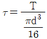
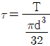
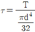
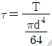
(정답률: 56%)
59. 인벌류트 치형과 비교한 사이클로이드 치형에 대한 설명으로 올바른 것은?
- 호환성이 있으려면 원주피치와 구름원이 모두 같아야 한다.
- 기어 중심거리가 맞지 않아도 물림이 좋다.
- 언더컷이 발생한다.
- 정밀기계인 시계, 계측기 등의 용도에 부적합하다.
(정답률: 52%)
60. 유압 장치에서 유압 액휴에이터인 것은?
- 유압 실린더
- 유압 펌프
- 유체 커플링
- 구동용 전동기
(정답률: 56%)
4과목: 전기제어공학
61. 캘빈 더블 브리지로 저저항을 측정할 수 있는 이유로서 알맞은 것은?
- 단자의 접촉 저항이나 리드선의 저항을 무시할 수 있으므로
- 검류기의 감도가 매우 양호하므로
- 저저항과 비교될 수 있으므로
- 표준 저항과 비교될 수 있으므로
(정답률: 50%)
62. 콘덴서에서 극판의 면적을 3배로 증가시키면 정전 용량은 어떻게 되는가?
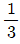
로 감소한다.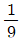
로 감소한다.- 3배로 증가한다.
- 9배로 증가한다.
(정답률: 50%)
63. 서보기구에서 제어량은?
- 유량
- 전압
- 주파수
- 위치
(정답률: 64%)
64. 그림에서 3개의 입력단자에 각각 1을 입력하면 출력단자 A와 B의 출력은?
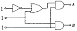
- A=0, B=0
- A=1, B=0
- A=1, B=1
- A=0, B=1
(정답률: 68%)
65. 그림과 같은 회로에서 부하전류 IL은 몇 A인가?
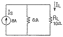
- 1
- 2
- 3
- 4
(정답률: 41%)
66. 열차의 무인운전을 위한 제어는 어느 것에 속하는가?
- 정치제어
- 추종제어
- 비율제어
- 프로그램제어
(정답률: 79%)
67. 입력으로 단위계단함수 u(t)를 가했을 때, 출력이 그림과 같은 조절계의 기본 동작은?
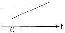
- 2위치 동작
- 비례 동작
- 비례 적분 동작
- 비례 미분 동작
(정답률: 45%)
68. 회전 중인 유도전동기의 3상 단자 중 임의의 2상의 단자를 바꾸어서 제동하는 방법은?
- 발전제동
- 희생제동
- 플러깅
- 직입제동
(정답률: 40%)
69. 목표값이 미리 정해진 시간적 변화를 하는 경우 제어량을 그것에 추종시키기 위한 제어는?
- 시퀀스제어
- 정치제어
- 비율제어
- 프로그램제어
(정답률: 50%)
70. 200[V]의 3상 교류전원에 화물용 승강기를 접속하고 전력과 전류를 측정하였더니 2.77[kW], 10[A]이었다. 이 화물용 승강기 모터의 역률은 약 얼마인가?
- 0.4
- 0.7
- 0.8
- 0.9
(정답률: 36%)
71. 교류는 그 주파수가 증가함에 따라 어떻게 되는가?
- 코일에는 잘 흐르나 콘덴서에는 흐르기 곤란해진다.
- 콘덴서에는 잘 흐르나 코일에는 흐르기 곤란해진다.
- 코일, 콘덴서 모두 흐르기 곤란해진다.
- 코일, 콘덴서 모두 흐르기 쉽다.
(정답률: 48%)
72. 직류기의 구성요소를 가장 바르게 표현한 것은?
- 계자, 보극, 정류자
- 브러시, 계자, 전기자
- 정류자, 전기자, 계자
- 보극, 전기자, 브러시
(정답률: 69%)
73. 제너 다이오드 회로에서 V1=20sinωt[V], V2=5V, RL≪RS일 때 V2의 파형으로 옳은 것은?
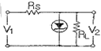
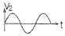
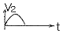
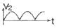
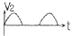
.
(정답률: 56%)
74. 자동제어계의 출력신호를 무엇이라 하는가?
- 조작량
- 목표값
- 제어량
- 동작신호
(정답률: 47%)
75. 그림과 같은 R-L-C회로의 전달함수는?
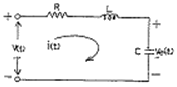
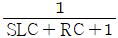
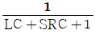
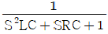
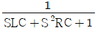
(정답률: 47%)
76. 제어계의 과도응답 해석에 사용하기 가장 알맞은 입력은?
- δ(t)
- 2u(t)
- -3tu(t)
- sin120πt
(정답률: 40%)
77. 그림과 같이 철심에 두 개의 코일 C1, C2를 감소 코일 C1에 흐르는 전류 I에 △I만큼의 변화를 주었다. 이 때 일어나는 현상에 대한 설명으로 틀린 것은?
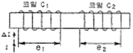
- 전류의 변화는 자속의 변화를 일으키며, 자속의 변화는 코일 C1에 기전력 e1을 발생시킨다.
- 코일 C1에서 발생하는 기전력 e1은 자속의 시간미분값과 코일의 감은 횟구의 곱에 비례한다.
- 코일 C2에서 발생하는 기전력 e2는 젠쯔의 법칙에 의하여 설명이 가능하다.
- 코일 C2에서 발생하는 기전력 e2와 전류 I의 시간 미분값의 관계를 설명해 주는 것이 자기 인덕턴스이다.
(정답률: 60%)
78. 변압기 결선에서 제3고조파가 발생하는 결선방식은?
- Y-Y결선
- △-△결선
- △-Y결선
- Y-△결선
(정답률: 70%)
79. 출력의 오차가 변화하는 속도에 비례하여 조작량을 가변하는 제어방식은?
- 미분 제어
- 정치 제어
- on-off 제어
- 시퀀스 제어
(정답률: 47%)
80. 기억과 판단기구 및 검출기를 가진 제어방식은?
- 시한제어
- 피드백제어
- 순서프로그램제어
- 조건제어
(정답률: 75%)